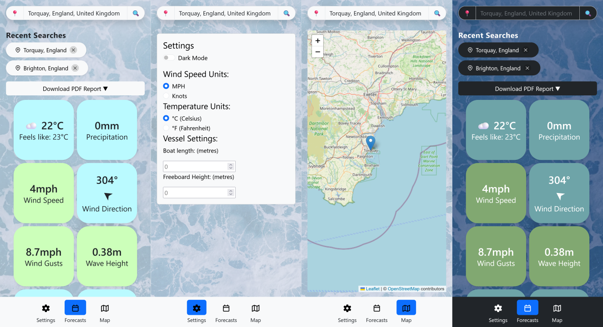

Weather App for Sailors
React, HTML, CSS, JavaScript, Figma
Group project for ECS522U Graphical User Interfaces at Queen Mary, University of London.
Back to PortfolioSummary
This group project was for a module in my second year at QMUL Computer Science. We designed and developed a mobile-first web application tailored to sailors, providing live marine weather using Open-Meteo API. The project was divided into Design, Implementation, and Evaluation phases.

Design
For this assignment, we had to create a weather application for use by a specific stakeholder. Our group decided on sailors as our primary stakeholder, as they depend on marine weather information in order to sail safely, so require very specialised applications.
Analysis of Primary Stakeholder
Sailors rely on both weather forecasts and live weather data to make informed decisions about their journey. Data such as wind speed/direction, wave height and tides are usually not present in most generalised weather apps, requiring sailors to go to various sources to access that information. Downloading data for future use is also key due to limited Internet access at sea.
I conducted an interview with a sailor, asking him what weather applications he currently used, the forcast information he valued the most before/during sailing, and his preference for data visualisations. We incorporated the aspects mentioned in this interview into our final design of our application.
Analysis of Wider Stakeholders
We also considered secondary and tertiary stakeholders that may be affected by our application. One secondary stakeholder includes companies that arrange boat trips require an application with detailed forecasts to prevent booking cancellations and ensure a safe journey. One teritary stakeholder would be coastguards, as they would want the application to have safety alerts so that less dangerous outings are taken to prevent incidents.
Design Decisions
Intial Designs
I sketched out an intial design based on our research and stakeholder analysis. These first sketches establish the key features of the application: a simple interface focusing on mobile users, colour-coded warnings for weather conditions, and a map.
The home page includes the user's location at the top, where they can either select their GPS location or type in a location. Below it, any urgent weather warnings or alerts, and the current weather data, shown as a list that can be scrolled through. The forecasts, current measurements and tide times were all separate screens that could be accessed via the bottom menu.
The map page would use the user's current GPS location to be placed on a map, with live weather information displayed as an overlay. Each overlay represents different measurements such as rain and wind levels, that can be toggled on or off via a button in the corner. In this second sketch, I combined the current weather and tide pages — I would then go on to remove the separate forecast page too.
Final Design
I created the final application's design in Figma. This design carried over many ideas from the initial designs, however the major change was to switch the weather information from rows to a grid layout. This allows for more information to be viewed at once, putting the important information front and centre.
The bottom menu was also changed to include the settings (instead of having it be a floating action button), forecasts, warnings, and the map. A separation of current and future weather pages was replaced with each metric having its own page for forecasts when clicked on.
Each metric is now a button that can be pressed to show a forecast over the next 24 hours and next 7 days. The buttons can be either neutral (blue) or one of 3 warning colours: green (safe), yellow (caution) and red (danger) to allow sailors to quickly assess how dangerous the weather conditions are in a given moment.
The application is designed to be intuitive, with large, labelled buttons to improve ease of understanding and use.
Implementation
The application was developed using React, using Bootstrap for styling, Leaflet for maps, Chart.js for graphs, Axios for HTTP requests and jsPDF for PDF support. Our application uses Open-Meteo's APIs to access marine weather data and displays it to the user. Recent searches are also stored for easier access and user-selected weather forecasts can be downloaded in PDF format. In settings, the user can enter the size of their vessel so that warnings can be more accurate, as smaller vessels may be more affected by weather conditions compared to larger ones. There is also an option for dark mode and preferred temperature and wind speed units.
Evaluation
Through this project I learnt how to use Figma and React, tools which I had no experience with prior. My experience with several other design applications allowed me to quickly adapt to Figma, however, it was a challenge to develop with the React framework for the first time. I was able to combine my existing Bootstrap knowledge since we made a web application with HTML/CSS/JS and my experience creating web pages. I learnt a lot about the non-technical challenges of software development as well — the importance of clearly-defined development plans, good teamwork, and flexible strategies to minimise risks.
As part of my evaluation, I designed an improvement to our map feature in Figma to make the map more useful to sailors. This includes the ability to track the user's course via GPS, display the current course on the map and view previous courses.